论文精读 MoE经典论文简牍
参考资料：
1.开创工作
1.1 MoE
- 论文名称：Adaptive mixtures of local experts, Neural Computation’1991
- 期刊/会议：Neural Computation (1991)
- 论文链接：https://readpaper.com/paper/2150884987
- 代表性作者：Michael Jordan, Geoffrey Hinton
这是大多数MoE论文都引用的最早的一篇文章，发表于1991年，作者中有两个大家熟知的大佬：Michael Jordan 和 Geoffrey Hinton。
提出了一种新的监督学习过程，一个系统中包含多个分开的网络，每个网络去处理全部训练样本的一个子集。这种方式可以看做是把多层网络进行了模块化的转换。
假设我们已经知道数据集中存在一些天然的子集（比如来自不同的domain，不同的topic），那么用单个模型去学习，就会受到很多干扰（interference），导致学习很慢、泛化困难。这时，我们可以使用多个模型（即专家，expert）去学习，使用一个门网络（gating network）来决定每个数据应该被哪个模型去训练，这样就可以减轻不同类型样本之间的干扰。
其实这种做法，也不是该论文第一次提出的，更早就有人提出过类似的方法。对于一个样本 c，第 i 个 expert 的输出为 $\mathbf{o}_i^c$，理想的输出是 $\mathbf{d}^c$，那么损失函数就这么计算：
其中 $p_i^c$ 是 gating network 分配给每个 expert 的权重，相当于多个 expert 齐心协力来得到当前样本 c 的输出。
这是一个很自然的设计方式，但是存在一个问题——不同的 expert 之间的互相影响会非常大，一个expert的参数改变了，其他的都会跟着改变，即所谓牵一发而动全身。这样的设计，最终的结果就是一个样本会使用很多的expert来处理。于是，这篇文章设计了一种新的方式，调整了一下loss的设计，来鼓励不同的expert之间进行竞争：
就是让不同的 expert 单独计算 loss，然后在加权求和得到总体的 loss。这样的话，每个专家，都有独立判断的能力，而不用依靠其他的 expert 来一起得到预测结果。下面是一个示意图：
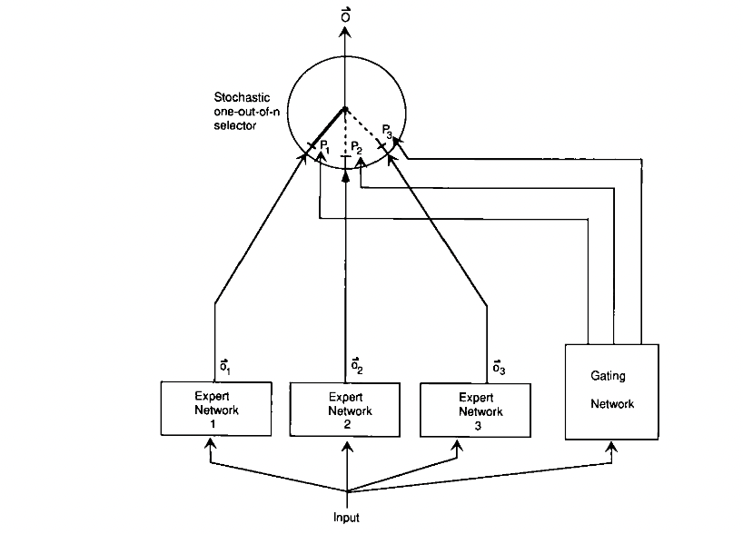
在这种设计下，我们将 experts 和 gating network 一起进行训练，最终的系统就会倾向于让一个 expert 去处理一个样本。
上面的两个 loss function，其实长得非常像，但是一个是鼓励合作，一个是鼓励竞争。这一点还是挺启发人的。
论文还提到另外一个很启发人的 trick，就是上面那个损失函数，作者在实际做实验的时候，用了一个变体，使得效果更好：
对比一下可以看出，在计算每个 expert 的损失之后，先把它给指数化了再进行加权求和，最后取了log。这也是一个我们在论文中经常见到的技巧。这样做有什么好处呢，我们可以对比一下二者在反向传播的时候有什么样的效果，使用$ E^c $对 第 i 个 expert 的输出求导，分别得到：
可以看到，前者的导数，只会跟当前 expert 有关，但后者则还考虑其他 experts 跟当前 sample c 的匹配程度。换句话说，如果当前 sample 跟其他的 experts 也比较匹配，那么 $ E^c $对 第 i 个 expert 的输出的导数也会相对更小一下。（其实看这个公式，跟我们现在遍地的对比学习loss真的很像！很多道理都是相通的）
以上就是这篇文章的理论部分，其实很简单，但它提到的MoE的设计，启发了后续无数的工作。
接下来一篇则是时隔20多年后的另一篇经典论文，可能也是大家更熟悉的MoE工作。
1.2 Sparsely-Gated MoE
- Outrageously Large Neural Networks: The Sparsely-Gated Mixture-of-Experts Layer, ICLR’17
- 期刊/会议：ICLR’17
- 论文链接：https://readpaper.com/paper/2952339051
- 代表性作者：Quoc Le, Geoffrey Hinton, Jeff Dean
这篇文章，从title上就可以看出来它的背景和目的——希望做出极大的神经网络。在此之前，有很多 conditional computational 的工作，在理论上可以在有限的计算成本内把模型做的非常大，但是那些方法在具体实现的时候，有各种各样的问题。这篇文章提出了 Sparsely-Gated Mixture-of-Experts layer ，声称终于解决了传统 conditional computational 的问题，在牺牲极少的计算效率的情况下，把模型规模提升1000多倍。
（1）Sparsely-Gated Mixture-of-Experts layer
跟1991年那个工作对比，这里的MoE主要有两个区别：
- Sparsely-Gated：不是所有expert都会起作用，而是极少数的expert会被使用来进行推理。这种稀疏性，也使得我们可以使用海量的experts来把模型容量做的超级大。
- token-level：前面那个文章，是 sample-level 的，即不同的样本，使用不同的experts，但是这篇则是 token-level 的，一个句子中不同的token使用不同的experts。
这篇文章是在RNN的结构上加入了MoE layer：
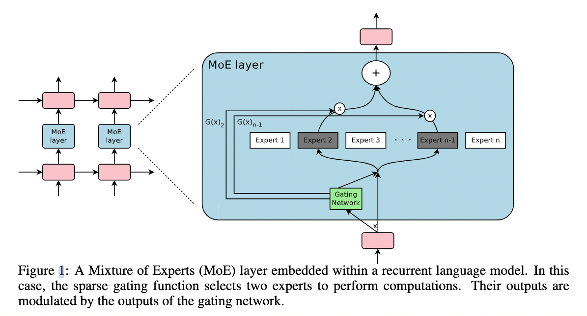
如图所示，每个token对应的position，都会有一个MoE Layer，每个MoE layer中包含了一堆的experts，每个expert都是一个小型的FFN，还有一个gating network会根据当前position的输入，选择少数几个expert来进行计算。
（2）Gating Network
设 $G(x)$ 和 $ E_i(x) $分别是 gating network 和第 i 个 expert 的输出，那么对于在当前position的输入x，输出就是所有 experts 的加权和：
(跟第一篇论文的第一个公式类似)
但是这里我们可能有上千个 experts，如果每个都算的话，计算量会非常大，所以这里的一个关键就是希望 G(x) 的输出是稀疏的，只有部分的 experts 的权重是大于 0 的，其余等于 0 的 expert 直接不参与计算。
首先看传统的 gating network 如何设计：
然后，作者加入了 sparsity 和 noise：
总而言之，sparsity 是通过 TopK sampling 的方式实现的，对于非 TopK 的部分，由于值是负无穷，这样在经过 softmax 之后就会变成 0，就相当于关门了。noise 项则可以使得不同 expert 的负载更加均衡。在具体实验中，作者使用的K=2~4.
（3）Expert Balancing
作者在实验中发现，不同 experts 在竞争的过程中，会出现“赢者通吃”的现象：前期变现好的 expert 会更容易被 gating network 选择，导致最终只有少数的几个 experts 真正起作用。因此作者额外增加了一个 loss，来缓解这种不平衡现象，公式如下：
其中 X 代表的是一个batch的样本，把一个batch所有样本的gating weights加起来，然后计算变异系数（ coefficient of variation）。总之，这个反映了不同 experts 之间不平衡的程度。最后这个 loss 会加到总体 loss 中，鼓励不同的 experts 都发挥各自的作用。
上面就是 Sparsely-Gated MoE的主要理论，作者主要在 language modeling 和 machine translation 两个任务上做了实验，因为这两个任务，都是特别受益于大数据和大模型的，而本文的MoE的作用主要就在于极大地扩大了模型容量——通过MoE，把RNN-based网络做到了137B（1.3千亿）参数的规模，还是挺震撼的。效果自然也是极好的。
经过训练呢，作者发现不同的 experts 确实分化出了不同的“专业”：
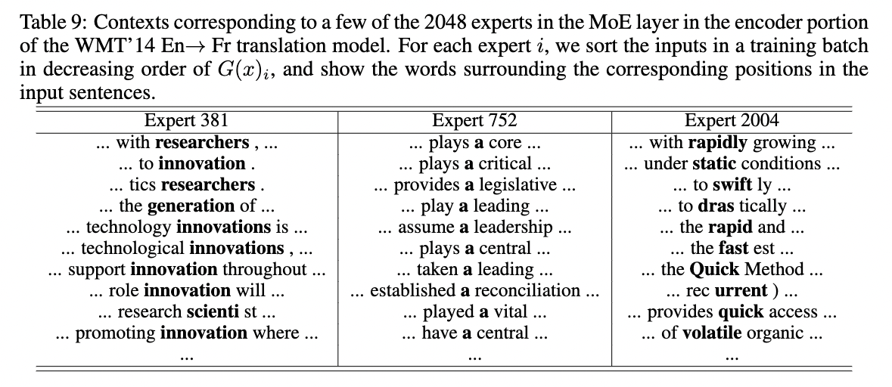
上面的两篇，是MoE系列工作的基础，接下来介绍的工作，都是近几年的比较出名的工作：
2.使用 MoE 开发超大模型
2.1 GShard
- 论文名称：GShard: Scaling Giant Models with Conditional Computation and Automatic Sharding, ICLR’21
- 期刊/会议：ICLR’21
- 论文链接：https://readpaper.com/paper/3040573126
GShard，按照文章的说法，是第一个将MoE的思想拓展到Transformer上的工作。具体的做法是，把Transformer的encoder和decoder中，每隔一个（every other）的FFN层，替换成position-wise 的 MoE 层，使用的都是 Top-2 gating network。
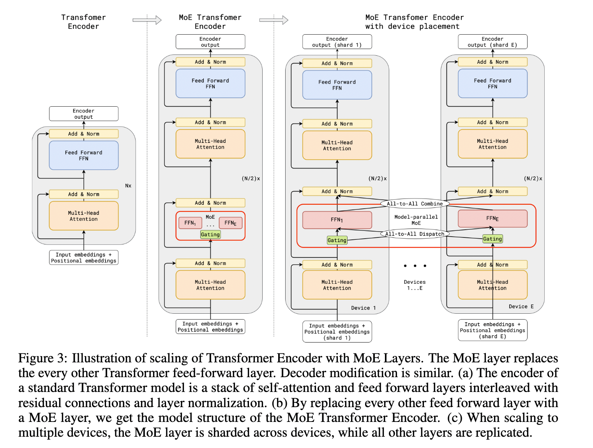
文中还提到了很多其他设计：
- Expert capacity balancing：强制每个expert处理的tokens数量在一定范围内
- Local group dispatching：通过把一个batch内所有的tokens分组，来实现并行化计算
- Auxiliary loss：也是为了缓解“赢者通吃”问题
- Random routing：在Top-2 gating的设计下，两个expert如何更高效地进行routing
2.2 Switch Transformers
- 论文名称：Switch Transformers: Scaling to Trillion Parameter Models with Simple and Efficient Sparsity, JMLR’22
- 期刊/会议：JMLR’22
- 论文链接：https://readpaper.com/paper/4568736324836663297
虽然发表是2022年才在发表在JMLR上，Swith Transformer实际上在21年就提出了。它是在T5模型的基础上加入了MoE设计，并在C4数据集上预训练，得到了一个“又快又好”的预训练大模型。
Swith Transformer 的主要亮点在于——简化了MoE的routing算法，从而大大提高了计算效率。
结构如下：
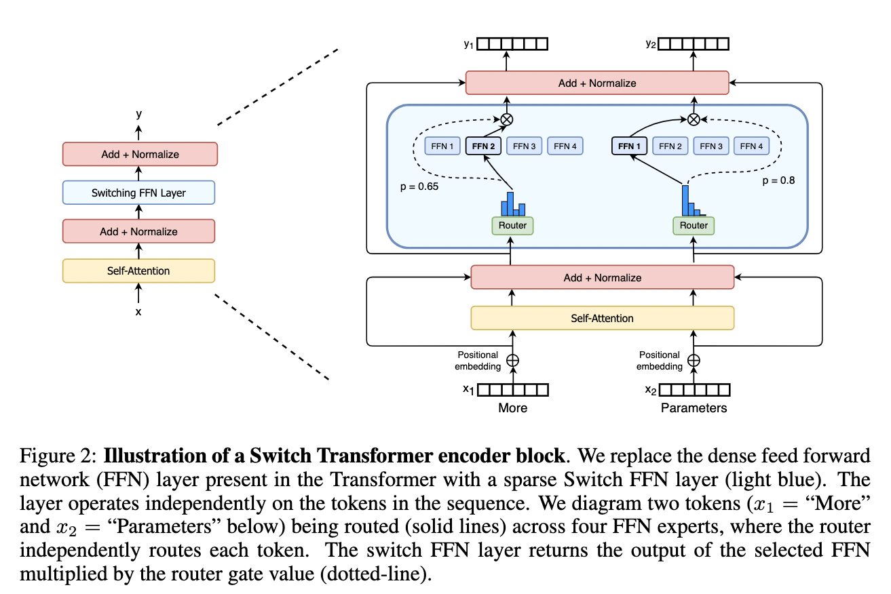
Swith Transformer 在论文中提到其设计的指导原则是——尽可能地把Transformer模型的参数量做大！（同时以一种简单高效的实现方式）
跟其他MoE模型的一个显著不同就是，Switch Transformer 的 gating network 每次只 route 到 1 个 expert，而其他的模型都是至少2个。这样就是最稀疏的MoE了，因此单单从MoE layer的计算效率上讲是最高的了。
下图展示了在同样的计算开销下，增大 experts 个数带来的性能提升，反正就是全面吊打T5，而且效率还一样：
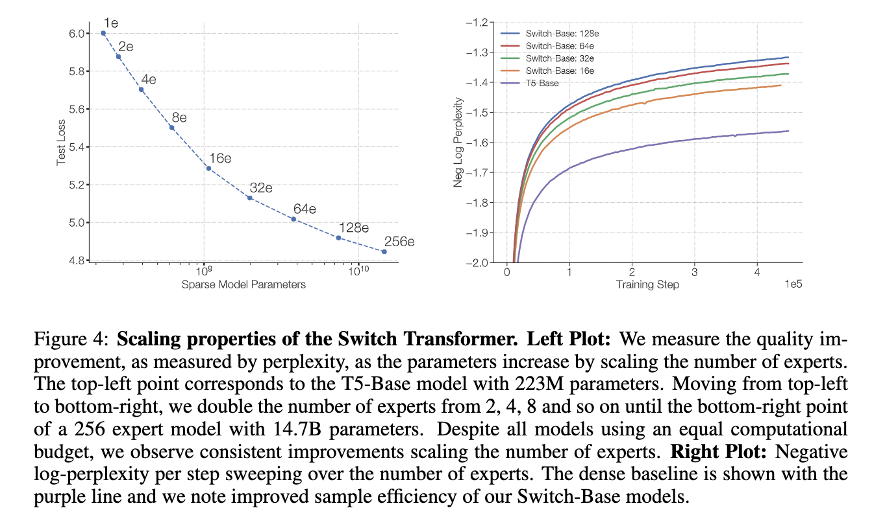
2.3 GLaM
- 论文名称：GLaM: Efficient Scaling of Language Models with Mixture-of-Experts, 2021
- 年份：2021
- 论文链接：https://readpaper.com/paper/4568736324836663297
- Google Blog：https://ai.googleblog.com/2021/12/more-efficient-in-context-learning-with.html
这是Google在2021年推出的一个超大模型，比GPT-3大三倍，但是由于使用了Sparse MoE的设计，训练成本却只有GPT-3的1/3，而且在29个NLP任务上超越了GPT-3。
下面这个来自Google Blog的动图很形象地展示了GLaM的结构：

其实我们可以发现，跟GShard几乎一模一样。
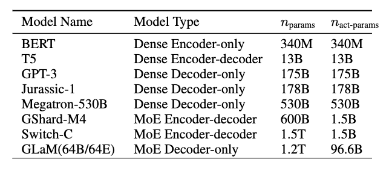
上表展示了GLaM跟其他大模型的对比。可以看到，虽然GLaM的总参数量有1.2T，但是在计算式实际激活的参数量只有96B，所以在inference的时候，比GPT-3等dense model要快得多。
GLaM使用的数据量也比Switch-Transformer等要大得多：
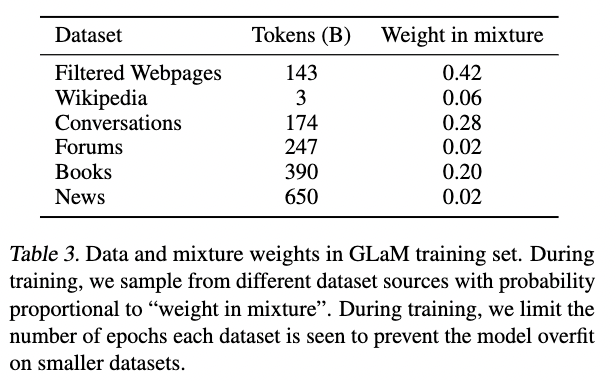
反正最终的结果，是一个比GPT-3更快更强大的通用LM。
2.4 小结
上面的三篇文章（GShard，Switch-Transformer，GLaM）都是希望通过MoE的方式把模型做得尽可能的大，大到普通人玩不起（动辄使用几百个experts），下面介绍的两篇文章，则更加亲民一点，是关于如何利用MoE去压缩模型、提高效率：
3.使用 MoE 来使模型轻量化
3.1 WideNet
- 论文名称：Go Wider Instead of Deeper, AAAI’22
- 期刊/会议：AAAI’22
- 论文链接：https://readpaper.com/paper/3184020733
这个文章名字比较唬人，思路也比较新颖，所以介绍一下。
它提出了名为 WideNet 的结构，想解决的主要问题是，如何在压缩模型参数量的情况下取得更好的效果。比如Albert通过参数共享机制降低了BERT的参数量，像tiny-bert之类的则是减少了Transformer的层数，但他们的性能都有了显著的下降。这篇文章提出，首先通过层之间的参数共享，来压缩模型大小，然后我们使用MoE的设计，扩大模型容量（但是模型在feed forward的时候计算量并没怎么提升），这样就可以达到“既要模型参数少，还要模型效果好”的效果。示意图如下：
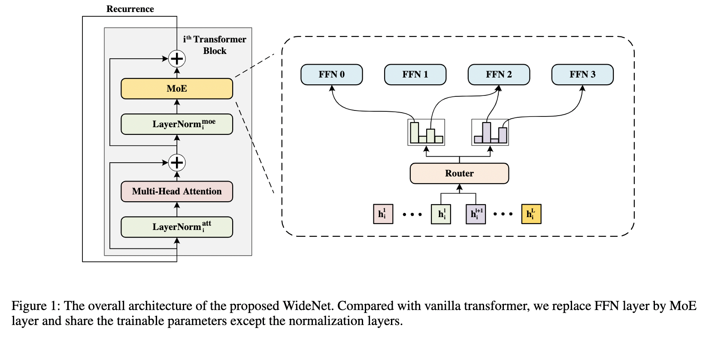
咋一看，似乎跟前面几个文章一模一样，但这里有一个重要区别：使用了recurrence机制，即层之间的参数共享（MoE layer也共享）。另外，为了增加学习的多样性，normalization layer 并不共享。
具体实现时，这里使用总共4个experts，每次选择Top2.
这样做的结果也挺不错：
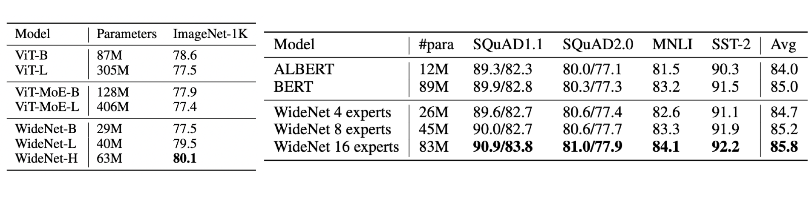
3.2 MoEBERT
- 论文名称：MoEBERT: from BERT to Mixture-of-Experts via Importance-Guided Adaptation, NAACL’22
- 期刊/会议：NAACL’22
- 论文链接：https://readpaper.com/paper/4614341372211634177
这一篇文章，则是结合了 MoE 和 knowledge distillation，在提升 inference 速度的情况下，还能提高效果。主要想解决传统的distillation方法掉点的问题。具体做法是把一个预训练好的模型（比如BERT）的FFN层分解成多个experts，这样在计算的时候速度可以大幅提高（相当于只激活原始FFN网络的一部分）。然后再通过模型蒸馏把原始模型的知识蒸馏到MoE版本的模型中。
注意这个文章其实跟上面介绍的WideNet类似，也是为了减少参数量。但有一个区别在于，WideNet是自己从头开始pre-train的，但是本文的MoEBERT则是想尽可能地把已经pre-train好的模型迁移过来，通过distillation的方式在downstream task上直接学。
因此，如果按照传统的方式让模型自由的去学习不同的experts，效果可能不好，因为你没有大量的数据来预训练。所以这里涉及到一个关键步骤—— Importance-Guided Adaptation：
在把 Transformer 中的FFN layer 改造成 MoE layer 时，我们先去计算 FFN layer 各个 neuron 的 importance，计算公式如下：
这里的 $w^1$ 和 $w^2$ 分别是 FFN layer 的某个 neuron 的输出和输出 weights vector，这个 importance score 也被应用于很多 model pruning 的工作中来衡量网络的某个 unit 的重要性。然后，在把 FFN 分解的时候，我们取最重要的一部分 neurons 在每个expert 中共享，剩下的部分平均分配到每个 expert。由于共享机制的存在，一定会多出一些 neurons，这部分就直接丢弃。（注意，这里我们并没有增加模型的参数量，而只是把一个全连接的FFN层，分解成多个sub-networks，加起来的参数量实际上是一样的）
这个示意图很形象：
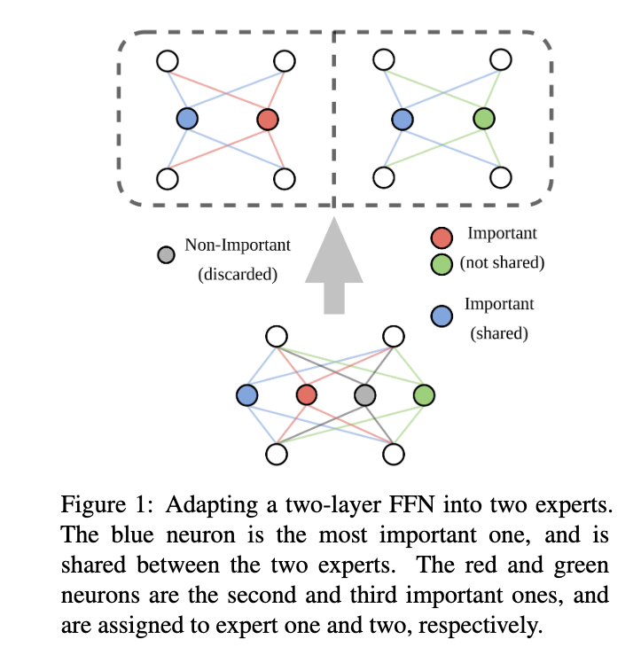
另外一个值得注意的点在于 expert routing 的方式，这里没有使用一个 gating network，而是在训练前直接给每个 token 都随机分配了一个 expert （具体是通过一个 hash function）。
在distillation部分，这里使用的逐层的distillation MSE loss，以及最后预测概率的 KL loss，二者加起来就是distillation 所使用的 loss。然后，再和原本自己的 CE loss 加起来，就是总体模型训练的loss。这里是直接在downstream dataset上面进行训练，属于 task-specific distillation。
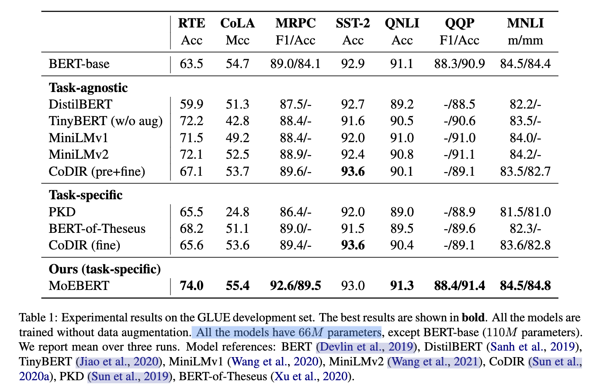
实验的结果也验证了 MoEBERT可以在同样参数量（effective parameters，MoE layer中只考虑被激活的experts）的情况下超越其他 distillation baselines。
值得注意的时，这里的baselines中，task-agnostic的方法都使用了预训练，而task-specific都没有预训练。总体上看，使用了预训练的模型，效果都会更好一些，但是MoEBERT打破了这个规律，在只使用task dataset的情况下，取得了SOTA的结果。
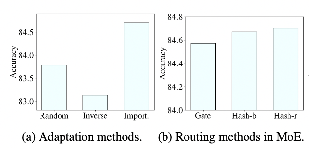
图a验证了前面提到的 Importance-Guided Adaptation 的有效性；图b则是验证了通过hash function的方式，而不是 trainable gating的方式来进行routing 的有效性。
4.结语：
以上总结了一下笔者在阅读 MoE 相关文献时印象较深的几篇文章，上述所阅读的文献主要与NLP相关的，其实 MoE 在各个领域中的应用已经十分广泛。比如Google提出的多模态MoE模型——LIMoE：

另外，跟 MoE 的理念相关的还有很多有趣的工作，比如：
Diverse Ensemble Evolution: Curriculum Data-Model Marriage, NeurIPS’18
Diversity and Depth in Per-Example Routing Models, ICLR’21
MoE 的思想，其实十分符合 Google 提出的 Pathways 愿景，也更加符合通用人工智能的设计理念。虽然目前 MoE 的工作，多数都是开发“超级模型”，但是上面列举的一些工作也表明 MoE 的用途还有很多，可以启发很多方向上方法的改进。